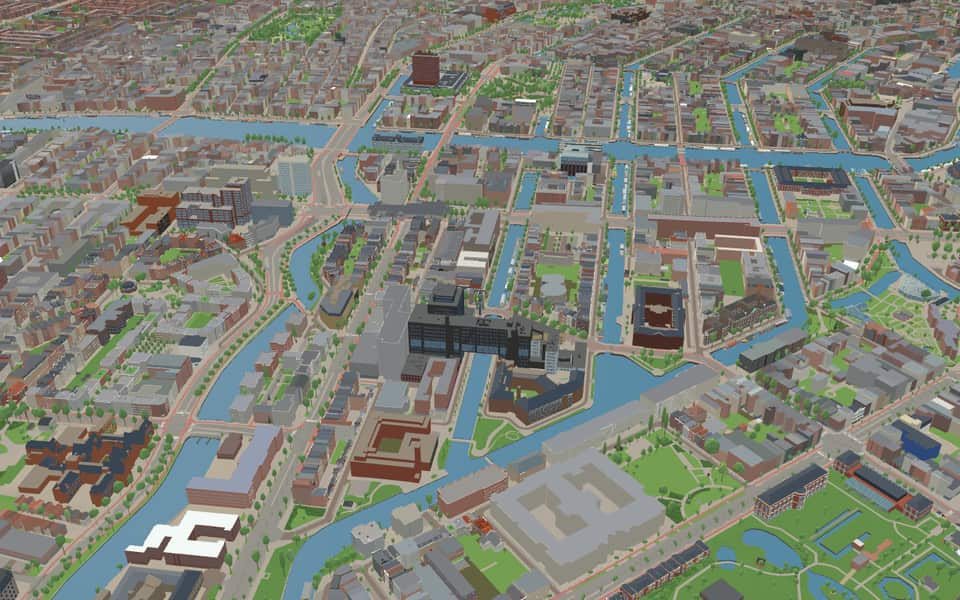
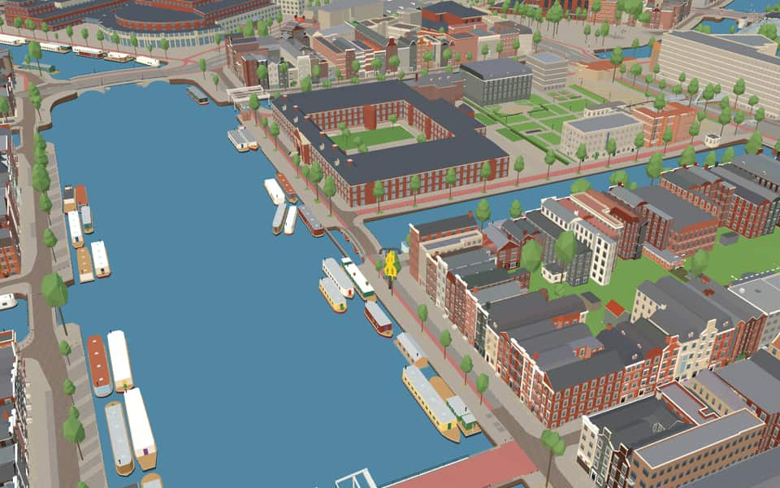
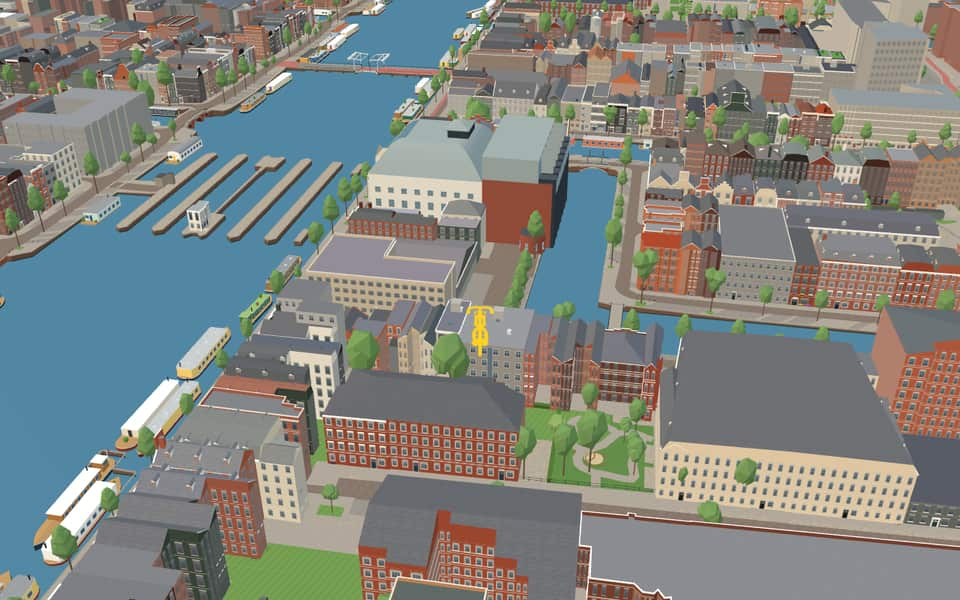
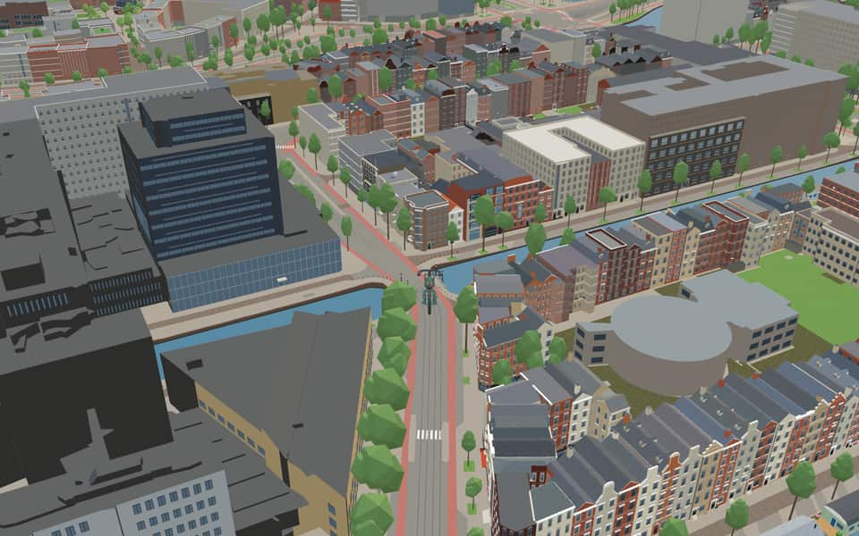

Neighbourhood · Amsterdam
Weesperbuurt
The Weesperbuurt is the easternmost part of the canal belt, between the Binnen Amstel, the Nieuwe Herengracht, the Plantage and the Nieuwe Achtergracht. nl.wikipedia.org
The name. The name matches Weesperplein, in the area. The street runs towards, and is therefore named after, the town of Weesp. At its end stood the Weesperpoort, and beyond it, outside the Singelgracht, the Weesperpoort station (demolished 1939). The buildings along the Weesperstraat were demolished between 1950 and 1960, after which it got its present width. Gemeente Amsterdam street-name register

In the game
Frames from a ride through Weesperbuurt.



6 more photos of Weesperbuurt


.jpg){kind=link}


.jpg){kind=link}


Built here
Buildings modelled one by one for the ride.
H'ART Museum — Amstelhof
Royal Theater Carré
Kriterion
- No picture yet
Nationaal Holocaust Namenmonument

Luther Museum Amsterdam
Photo: Etsplaat Wittenberg Amsterdam.jpg (Geertvanwesemael, CC BY-SA 3.0)
- No picture yet
Roeterseilandcampus REC (UvA, Amsterdam Law School and De Brug)
- No picture yet
Amstel Hotel
- No picture yet

- No picture yet
Kattenburg (Marineterrein), Amsterdam
1782 brick wings on Kattenburgerstraat and the canal
- No picture yet
Nieuwe Achtergracht 100, Amsterdam-Centrum (Roeterseiland)
1923 five-storey brick office building on the canal with cream-framed multi-pane windows, a central stair tower with a bowed oriel and entrance, stone bands and an overhanging copper roof edge
- No picture yet
Nieuwe Achtergracht 127 (BAG), Amsterdam
UvA Roeterseiland, 1932 brick wing on the Nieuwe Achtergracht / Nieuwe Prinsengracht
- No picture yet
Spinozastraat 51 / Sarphatistraat 104, Amsterdam-Centrum (Weesperbuurt)
2017 hotel and apartment block in sand-yellow ceramic brick with deep square window frames and green glazed roof slopes, wrapped round a retained 1890s brick-and-cream corner house and warehouse on the Sarphatistraat
- No picture yet
Valckenierstraat 65, Amsterdam-Centrum (Roeterseiland)
1963 university laboratory block, four storeys of brick ribbon windows with cream bands over a dark plinth, a two-storey steel-window canal wing and a brick tower with a chimney stack


Did you know
Trivia the ride can show you here.
- Royal Theatre Carré has stood on the Amstel here since 1887. Wikipedia (translated from Dutch)
- Since 2009 the H'ART Museum, called Hermitage Amsterdam until 2023, has filled the whole historic Amstelhof. Wikipedia (translated from Dutch)
- Until 1994 the Magere Brug was opened by hand. Wikipedia
- De Schaduwkade remembers two hundred Jewish residents of the Nieuwe Keizersgracht killed in the Second World War. Wikipedia (translated from Dutch)
- At the Hortusplantsoen, the future football coach Rinus Michels taught gymnastics from 1956 to 1965. Wikipedia (translated from Dutch)
- Vroom & Dreesman opened its first shop, De Zon, at Weesperstraat 70 in 1887. Wikipedia (translated from Dutch)
- Until the Second World War the Weesperbuurt was part of the Jewish quarter. Wikipedia (translated from Dutch)
- Canal Ring Area of AmsterdamThe city expanded in four distinct stages between 1585 and 1665. en.wikipedia.org
- Canal Ring Area of AmsterdamCanals were extended to the Amstel around 1660 with new names added. en.wikipedia.org
- Canal Ring Area of AmsterdamThe Dutch name Grachtengordel literally translates to 'canal belt' or 'girdle'. en.wikipedia.org
- Canal Ring Area of AmsterdamThough built in the Dutch Golden Age, many facades show styles from later restorations. en.wikipedia.org
- H'ART MuseumRussian President Dmitry Medvedev helped open the museum alongside Queen Beatrix in 2009. en.wikipedia.org
- H'ART MuseumThe institution changed its name to H'ART Museum in September 2023. en.wikipedia.org
- KriterionPediatrician Hein Fiedeldij Dop helped hide Jewish children by using police contacts to spot raids. nl.wikipedia.org
49 more facts
- KriterionAbout a thousand children were saved from the nursery school opposite the Hollandsche Schouwburg. nl.wikipedia.org
- Luther Museum AmsterdamThe institution was renamed Luther Museum Amsterdam in 2019, having previously been called the Luther Collection Amsterdam. nl.wikipedia.org
- Luther Museum AmsterdamA Lutheran art foundation established in 1986 created this collection to save church treasures during a turbulent era of closures. nl.wikipedia.org
- Luther Museum AmsterdamThe authentic interiors of the former regent's chambers are themselves considered valuable art historical pieces within the museum. nl.wikipedia.org
- Luther Museum AmsterdamThe collection was assembled within the former regent's chambers of a building named Wittenberg. nl.wikipedia.org
- Nationaal Holocaust NamenmonumentThe Nederlands Auschwitz Comité founded this monument to commemorate the Dutch Holocaust victims. en.wikipedia.org
- Nationaal Holocaust NamenmonumentAlongside Jewish victims, the site also remembers 220 Roma and Sinti people murdered by the Nazi regime. en.wikipedia.org
- Royal Theater CarréThe venue opened on December 3, 1887 as a wooden structure with a stone façade. en.wikipedia.org
- Royal Theater CarréOscar Carré was the German circus director who built this first stone theatre in 1866. en.wikipedia.org
- Royal Theater CarréDoors remained closed from 1944 to 1945 due to police raids during World War II. en.wikipedia.org
- Royal Theater CarréFounded in 1887, the venue was originally designed as a permanent circus building. en.wikipedia.org
- Shadow quayTwelve local residents initiated the monument after discovering plaques for the murdered Kok family in 2009. nl.wikipedia.org
- Shadow quayThe memorial features two hundred metal plaques bearing the names of those victims. nl.wikipedia.org
- Shadow quayPlaques are grouped around the house number of the residence where each person lived across the water. nl.wikipedia.org
- WeesperpleinThe Weesperstaete building earned the grim nickname Death Chamber while housing a university psychology lab. nl.wikipedia.org
- WeesperpleinTrains to Utrecht departed from the nearby station between 1843 and 1939 after the original gate was demolished. nl.wikipedia.org
- WeesperpleinA monument honoring Jewish recognition returned to the square in 2021 after moving locations in 1968. nl.wikipedia.org
- WeesperpleinHildo Krop's 1923 sculptures of a seagull and fish decorate the Dr. Meijer de Hondbrug over the canal. nl.wikipedia.org
- HortusplantsoenA plaque unveiled in 2007 honors Jewish students sent to camps from this school. nl.wikipedia.org
- HortusplantsoenTwo bridges span the pond: a 1877 natural stone vault and a 1903 iron arch, both national monuments. nl.wikipedia.org
- Lau MazirelbrugUnlike other works by Hildo Krop, this bridge features paving stones shaped like hippos and crocodiles designed by Adrianus Remiëns. nl.wikipedia.org
- Lau MazirelbrugA national monument stands directly between this bridge and the nearby Ben Polak Bridge. nl.wikipedia.org
- AmstelAmstel combines 'aam' (water) and 'stelle' (solid ground), meaning water on dry land. en.wikipedia.org
- AmstelThe Van Amstel family ruled the region between the twelfth and fourteenth centuries. en.wikipedia.org
- AmstelEach year the water hosts a Liberation Day concert and a rowing match. en.wikipedia.org
- Nieuwe AchtergrachtConstruction took place within the prosperous Jewish quarter known as Jodenbuurt. en.wikipedia.org
- Nieuwe AchtergrachtRabbi Dr. Meijer de Hond lends his name to bridge no. 257 crossing the canal. en.wikipedia.org
- Nieuwe AchtergrachtThe former main barracks of the Amsterdam fire brigade stand at numbers 26-34. en.wikipedia.org
- Nieuwe HerengrachtOriginal stone arch bridges were swapped for movable ones to accommodate the growing shipping industry. en.wikipedia.org
- Nieuwe HerengrachtA cycle tunnel on the south bank dives beneath Weesperstraat to connect the Amstel with the Plantage area. en.wikipedia.org
- Nieuwe KeizersgrachtThe section east of the Amstel was dug during a final extension. en.wikipedia.org
- Nieuwe PrinsengrachtUntil 1866, the canal extended east of the Muidergracht all the way to the Entrepotdok. en.wikipedia.org
- Nieuwe PrinsengrachtThree ponds within the Artis zoo site remain from the section of this canal that was later filled in. en.wikipedia.org
- Nieuwe PrinsengrachtA plate bridge built in 1924 crosses the water at Roetersstraat. en.wikipedia.org
- OnbekendegrachtThe name Onbekendegracht means 'unknown canal' and was once also called Korte Amstelgrachtje. en.wikipedia.org
- OnbekendegrachtResidents requested a name change in 1948 because the current title caused confusion. en.wikipedia.org
- OnbekendegrachtBuildings numbered one through five were constructed in 1906. en.wikipedia.org
- Plantage MuidergrachtThe section along Sarphatistraat was once named Plantage Lijnbaansgracht before 1915. en.wikipedia.org
- Plantage MuidergrachtPoet Adriaan Morriën lived at number three and titled a memoir after the street. en.wikipedia.org
- Plantage MuidergrachtJournalist Milo Anstadt described his family home at number eighty-nine in De verdachte oorboog. en.wikipedia.org
- Plantage MuidergrachtBuildings along this canal originally hosted physics, chemistry, and biology courses before shifting to other faculties. en.wikipedia.org
- SingelgrachtThe name Singelgracht derives from the Dutch word omsingelen, meaning to surround. en.wikipedia.org
- SingelgrachtStreets like Marnixkade line the inside while Nassaukade runs along the outside. en.wikipedia.org
- RhijnspoorpleinConstruction of the Amsterdam subway began here in August 1970. nl.wikipedia.org
- RhijnspoorpleinFoundations of a former train station turntable were demolished during this work. nl.wikipedia.org
- RhijnspoorpleinThe tunnel for the East Line opened to traffic in October 1977. nl.wikipedia.org
- WeesperstraatDuring the harsh winter of 1944-1945, wood and materials were stripped from empty Jewish homes. nl.wikipedia.org
- WeesperstraatOriginal buildings were demolished in the 1960s to widen the street into a highway. nl.wikipedia.org
- WeesperstraatBridge 240 honors L.H., the last pre-war chief rabbi who died in Poland in 1942. nl.wikipedia.org
Names on the map
Where the canal, bridge and street names come from.
Canals and water
- AmstelThe river to which Amsterdam owes its name and its origin.
- Nieuwe AchtergrachtThis canal was dug around 1660 behind (achter) the four main canals, hence the name. It connected the Reguliersgracht with the Amstel. In 1870 most of it was filled in.
- Nieuwe HerengrachtAfter the Heren Regeerders (the lords who governed the city; in the old days the city was not administered but ruled). The canal already existed as a ditch when in 1612 it was widened into today's canal, the first of the three main canals. The stretch beyond the Leidsegracht belongs to the expansion of 1658, as does the Nieuwe Herengracht.
- Nieuwe KeizersgrachtAfter Emperor Maximilian, Archduke of Austria, who in 1489 granted Amsterdam the privilege of bearing the imperial crown on its coat of arms.
- Nieuwe PrinsengrachtAfter 'the princely title', meaning that of the Princes of Orange. The canal is one of the three main canals, and the plainest in the character of its buildings. It was dug in the expansion of 1612 and built up from the Brouwersgracht to the Leidsegracht. In the expansion of 1658 this canal too was extended across the Amstel (as far as the Entrepotdok). The first side street after the Brouwersgracht became the Prinsenstraat. The name Prinsenmarkt for today's Noordermarkt never caught on with the citizens.
- OnbekendegrachtThe Onbekendegracht originally gave the former city carpentry yard access to the Amstel. A notarial deed of 1800 calls the canal 'het Onbekende of Amstelgragtje' (the unknown or Amstel little canal).
- Plantage MuidergrachtThe town of Muiden. The former Muidergracht began at the Leprozengracht. After it was filled in, one part became the Jonas Daniël Meijerplein, and the second part was later renamed Hortusplantsoen. The part of the Plantage Muidergracht parallel to the Sarphatistraat was called Plantage Lijnbaansgracht before 1915.
- SingelgrachtA singel is a stretch of water or a road along the outer edge of a town. In Amsterdam the Singel (Amsterdammers say 'het Singel') formed the city boundary in the second half of the fifteenth century, inside which the walls and gates were built. At that time the moat was called 't Singel or the Stedegracht (now the Singel, Kloveniersburgwal and Geldersekade). Today's Singel has kept the old name. In the seventeenth century the city government did introduce the name Koningsgracht for it, but that name did not stick.
Bridges
- L.H. SarlouisbrugThis fixed bridge is named after Louis Hartog Sarlouis (1884-1942), founder of the Jewish secondary school (H.B.S.) and chief rabbi of Amsterdam from 1936 to 1942, the year he was deported to Auschwitz, where he died.Bridge 240: a steel bridge for road traffic, dated 1926 in the city's bridge register.
- Lau MazirelbrugLaura Carola Mazirel (1907-1974), lawyer and solicitor in Amsterdam, who stood up for groups isolated in society: before the Second World War German refugees, after the war Gypsies and homosexuals. During the war she was involved both with the crèche of the Hollandsche Schouwburg, where the Jewish population was gathered before deportation, and with the resistance group around Gerrit van der Veen.Bridge 259: a steel bridge for road traffic, dated 1881 in the city's bridge register.
- Magere BrugAround 1670 a drawbridge was laid over the Amstel so narrow that it was only fit for pedestrians. Although officially called the Kerkstraatbrug (after the Lange Kerkstraat), people stubbornly called it the 'Magere brug' (skinny bridge), and the city council then adopted the name. The story of the Mager sisters, who lived nearby, belongs to the realm of fables. Old pictures show that the old bridge was a simple wooden structure: the deck of the fixed part lay on simple wooden trestles, while the movable middle was a drawbridge with a single leaf. In 1772 it was given a double leaf, and in 1871 the bridge was demolished entirely and replaced by one with nine spans.Bridge 242: a movable wooden bridge.
- Piet MeerburgbrugThis bridge is named after Piet Meerburg, born in De Bilt in 1919 and died in Amsterdam in 2010. During the Second World War he was involved in rescuing Jewish children, for which he received the Yad Vashem distinction; one of those children was the later burgomaster Ed van Thijn. With Lau Mazirel and Walter Süskind, among others, he rescued many adults and children during the German occupation from the Hollandsche Schouwburg and the crèche opposite it. He was also one of the founders of the nearby Kriterion cinema, which is run by students of the University of Amsterdam.Bridge 234: a brick bridge for road traffic, dated 1877 in the city's bridge register.
Streets
- AmstelThe river to which Amsterdam owes its name and its origin.
- HortusplantsoenAfter the Hortus Botanicus opposite. The quay used to be called Muidergracht, but because of confusion with the Plantage Muidergracht this name was set in 1911.
- HuddekadeJohannes Hudde (1628-1704), burgomaster of Amsterdam from 1672 to 1704 and an expert in water management. The former Hogesluis (built 1662, demolished 1883) was built to his design.
- HuddestraatJohannes Hudde (1628-1704), burgomaster of Amsterdam from 1672 to 1704 and an expert in water management. The former Hogesluis (built 1662, demolished 1883) was built to his design.
- Korte 's-GravesandestraatWillem Jan van 's-Gravesande (1688-1742), professor of mathematics and astronomy at Leiden. He was the first follower of Newton in the Netherlands.
- Korte AmstelstraatThe Korte Amstelstraat was made around 1670 by partly filling in the Nieuwe Achtergracht. A church was planned in the middle of the Amstelveld, so in 1669 a temporary church was built in a corner. The church was never built; the temporary church still stands.
- LepelkruisstraatNothing certain can be said about the origin of the name; it probably comes from a gable stone. The Lepelstraat was originally a short side street of the Weesperstraat and officially the Weesperdwarsstraat until the middle of the eighteenth century. At the end of the nineteenth century the Lepelstraat was extended in both directions over the sites of the Veemarkt and the Stadswerf. Because of new building along the Weesperstraat only the western part remains. The eastern part was renamed Lepelkruisstraat and Korte Lepelstraat in 1980.
- LepelstraatNothing certain can be said about the origin of the name; it probably comes from a gable stone. The Lepelstraat was originally a short side street of the Weesperstraat and officially the Weesperdwarsstraat until the middle of the eighteenth century. At the end of the nineteenth century the Lepelstraat was extended in both directions over the sites of the Veemarkt and the Stadswerf. Because of new building along the Weesperstraat only the western part remains. The eastern part was renamed Lepelkruisstraat and Korte Lepelstraat in 1980.
- ManegestraatAfter the French riding school (manège) that stood here from 1761 to 1881.
- NeerlandiapleinThe name of the building put up in 1888 by the Diaconate of the Reformed congregation as a home for elderly married couples, part of the Amstelhof complex for elderly people in need of care. Today it is part of the Hermitage.
- Nieuwe AchtergrachtDug at the same time as the Achtergracht, but on the other (new) side of the Amstel. Around 1670 part of it was filled in, creating the Korte Amstelstraat.
- Nieuwe HerengrachtAfter the Heren Regeerders (the lords who governed the city; in the old days the city was not administered but ruled). The canal already existed as a ditch when in 1612 it was widened into today's canal, the first of the three main canals. The stretch beyond the Leidsegracht belongs to the expansion of 1658, as does the Nieuwe Herengracht.
18 more streets with a story
- Nieuwe KeizersgrachtAfter Emperor Maximilian, Archduke of Austria, who in 1489 granted Amsterdam the privilege of bearing the imperial crown on its coat of arms.
- Nieuwe KerkstraatThe Kerkstraat was laid out in 1665 and named for the plan to link four churches (kerken) with it: the Amstelkerk, the Oosterkerk and two others that were never built, one by the Molenpad and one by the Weesperstraat. Later the street got various names: Kerkstraat (to the Amstel), Nieuwe Kerkstraat (to the Roetersstraat), Plantage Kerklaan (in the Plantage) and Korte Kerkstraat, which was renamed Tussen Kadijken in 1943.
- Nieuwe PrinsengrachtAfter 'the princely title', meaning that of the Princes of Orange. The canal is one of the three main canals, and the plainest in the character of its buildings. It was dug in the expansion of 1612 and built up from the Brouwersgracht to the Leidsegracht. In the expansion of 1658 this canal too was extended across the Amstel (as far as the Entrepotdok). The first side street after the Brouwersgracht became the Prinsenstraat. The name Prinsenmarkt for today's Noordermarkt never caught on with the citizens.
- OnbekendegrachtThe canal was dug to divert the Nieuwe Achtergracht. The name (unknown canal) is said to have arisen because the diversion meant the Nieuwe Achtergracht could no longer be seen from the Amstel. In 1948 one of the residents asked the burgomaster and aldermen to change the name, as people found it somewhat strange. Fortunately the request was not granted.
- PancrasstraatGerbrand Claesz Pancras (1591-1649), Amsterdam soap-boiler, burgomaster of the city from 1639 to 1649. When it was laid out the name was set as Pancraskade (council decision of 15 November 1876); after the canal was filled in in 1908 the name was adjusted.
- Piet MeerburgbrugThis bridge is named after Piet Meerburg, born in De Bilt in 1919 and died in Amsterdam in 2010. During the Second World War he was involved in rescuing Jewish children, for which he received the Yad Vashem distinction; one of those children was the later burgomaster Ed van Thijn. With Lau Mazirel and Walter Süskind, among others, he rescued many adults and children during the German occupation from the Hollandsche Schouwburg and the crèche opposite it. He was also one of the founders of the nearby Kriterion cinema, which is run by students of the University of Amsterdam.
- Plantage KerklaanIn 1682 the city government decided to lay out a 'plantagie' on this land, which came within the city in 1658: a pleasure ground built up only with summer houses, gardens and a few inns. A grid of straight lines was laid out over the whole area. The avenue running the length of the new Plantage was named Middenweg or Middenlaan, and three cross avenues were added. The summer houses were gradually replaced by houses, so that today only the Wertheimpark recalls the area's former purpose.
- Prof. TulppleinNicolaes Tulp (1593-1674), Amsterdam physician, lecturer to the surgeons' guild at the Athenaeum Illustre and several times burgomaster of the city. The title Professor was added to the street name in 1946, because many people tended to look for the street in the flower neighbourhood (tulp = tulip).
- Prof. TulpstraatNicolaes Tulp (1593-1674), Amsterdam physician, lecturer to the surgeons' guild at the Athenaeum Illustre and several times burgomaster of the city. The title Professor was added to the street name in 1946, because many people tended to look for the street in the flower neighbourhood (tulp = tulip).
- RhijnspoorpleinAfter the former Rhijnspoorweg-Maatschappij (Rhine Railway Company), which opened the Weesperpoort station here in 1843 and was later absorbed into the Dutch Railways.
- RoetersstraatHendrik Roeters (1617-1699), alderman of the city and owner of the land of the Roeterseiland named after him. The street was laid out on the Roetersburgwal, filled in in 1873.
- SarphatistraatSamuel Sarphati (1813-1866), Amsterdam doctor and pharmacist with many connections in banking circles, who did much for the city. He drew up plans for extending the city around the Frederiksplein and beyond the Singelgracht, for which he founded the Nederlandsche Bouwmaatschappij in 1864. The societies and buildings that came about through him include the Society for Agriculture (1848), the Society for Industry (1852) with the Paleis voor Volksvlijt it built (1864), the School of Commerce, the National Mortgage Bank and the Amstel Hotel (1866). Before the Sarphatipark was named, the streets around it were parts of the Ceintuurbaan, Jan Steenstraat, Van der Helststraat and Sweelinckstraat.
- SpinozahofBenedictus Spinoza (Baruch d'Espinoza) (1632-1677), Jewish philosopher who, after being banished from the Jewish community, lived by grinding spectacle lenses. One of the leading thinkers of the seventeenth century, he is known above all for his 'Ethics'. The Spinoza eye clinic stood on this street from 1874 to 1966. Part of the street was earlier called Andrieszkade, after the oldest known burgomaster of Amsterdam.
- SpinozastraatBenedictus Spinoza (Baruch d'Espinoza) (1632-1677), Jewish philosopher who, after being banished from the Jewish community, lived by grinding spectacle lenses. One of the leading thinkers of the seventeenth century, he is known above all for his 'Ethics'. The Spinoza eye clinic stood on this street from 1874 to 1966. Part of the street was earlier called Andrieszkade, after the oldest known burgomaster of Amsterdam.
- ValckenierstraatGillis Valckenier (1623-1680), nine times burgomaster of Amsterdam between 1665 and 1680. The street was laid out on the filled-in stretch of the Nieuwe Lijnbaansgracht.
- Voormalige StadstimmertuinThe City Carpentry Yards (workshops and stores for building materials) were here from 1660 to 1899. They are now on the Van Reigersbergenstraat.
- WeesperpleinThe street runs towards, and is therefore named after, the town of Weesp. At its end stood the Weesperpoort, and beyond it, outside the Singelgracht, the Weesperpoort station (demolished 1939). The buildings along the Weesperstraat were demolished between 1950 and 1960, after which it got its present width.
- WeesperstraatThe street runs towards, and is therefore named after, the town of Weesp. At its end stood the Weesperpoort, and beyond it, outside the Singelgracht, the Weesperpoort station (demolished 1939). The buildings along the Weesperstraat were demolished between 1950 and 1960, after which it got its present width.